Biografía
8 de enero de 1947 – 10 de enero de 2016
Recorré su vida ↓El camaleón del rock
David Robert Jones, conocido artísticamente como David Bowie, fue músico, actor y artista visual. Para él, la música, la imagen y la actuación formaban parte de una misma expresión artística. Su capacidad para transformarse y crear diferentes personajes hizo que fuera el camaleón del rock.
Su vida estuvo marcada por la transformación, la experimentación y una búsqueda artística constante. Dejó una huella en la música, la moda, el teatro y las artes visuales.
Tocá a Bowie y cambiale el color

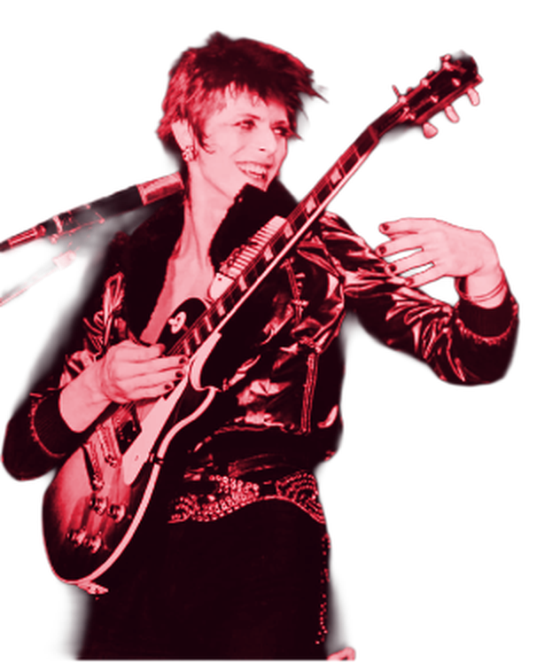
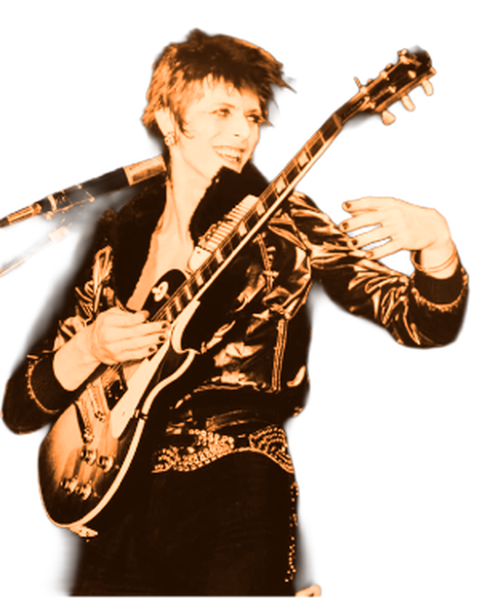
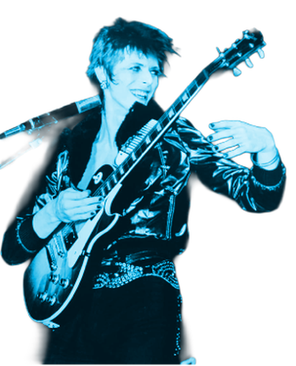

Tocá la foto o elegí un color
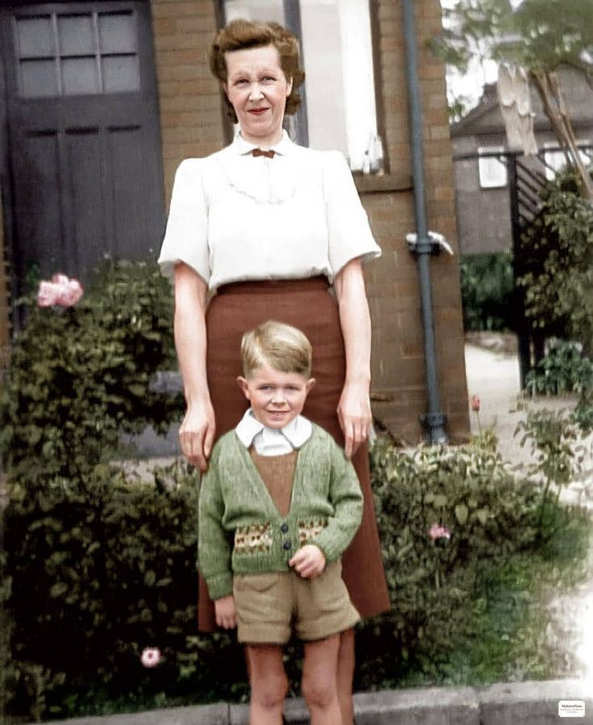
1947
Nace David Robert Jones
El 8 de enero nace en Brixton, al sur de Londres. De chico se interesa por el jazz, el rock and roll y aprende a tocar el saxofón.
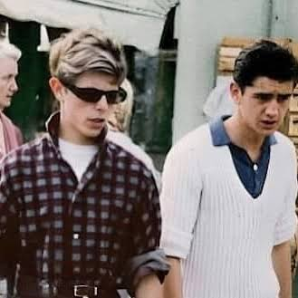
Años 50
Bromley y su hermano Terry
Se muda con su familia a Bromley. Su medio hermano Terry lo acerca al jazz, al rock y a la literatura beat. La enfermedad mental de Terry lo marcó profundamente y aparece en muchas de sus canciones.
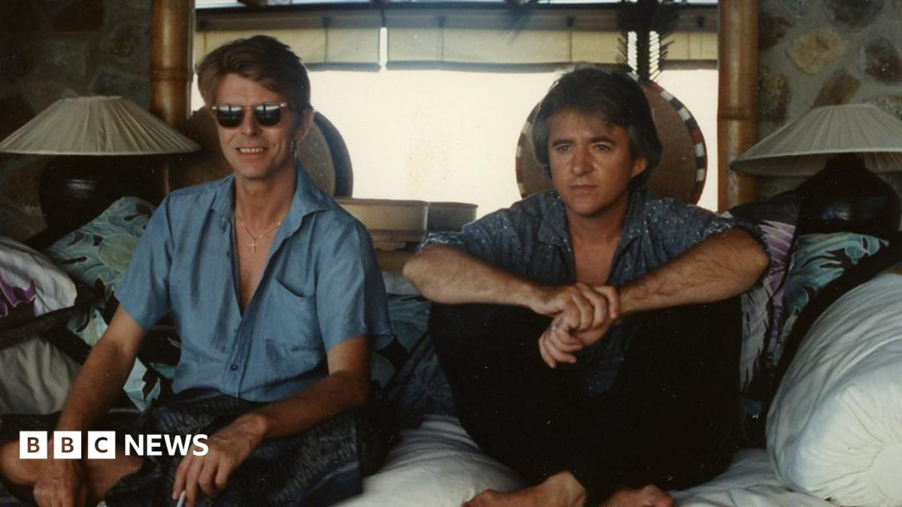
1962
La pelea que le cambió la mirada
Una pelea con su amigo George Underwood le deja la pupila del ojo izquierdo dilatada para siempre, lo que le da esa mirada de dos colores tan característica.

1964
Primera banda y primer disco
Con el nombre de Davie Jones canta y toca el saxo en The King Bees, con quienes graba su primer simple, "Liza Jane".

1966
Nace "David Bowie"
Cambia su nombre artístico a David Bowie para que no lo confundan con Davy Jones, cantante de The Monkees.
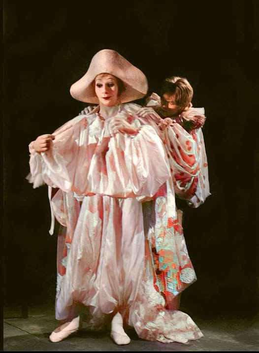
1967 – 1968
El mimo y el teatro
Estudia mimo y expresión corporal con Lindsay Kemp y actúa con él en Pierrot in Turquoise. El teatro y el maquillaje van a marcar todos sus personajes.

1969
Space Oddity
Lanza "Space Oddity" días antes de la llegada del hombre a la Luna. La canción presenta al Mayor Tom y se convierte en su primer gran éxito.

1970
Casamiento y un sonido más duro
Se casa con Angela Barnett y publica The Man Who Sold the World, un disco de rock más pesado.
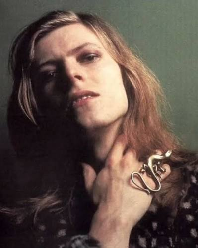
1971
Hunky Dory y el nacimiento de su hijo
Nace su hijo Duncan Jones (Zowie). Publica Hunky Dory, con canciones como "Changes" y "Life on Mars?".

1972
Ziggy Stardust
Crea a Ziggy Stardust, una estrella de rock extraterrestre. El disco The Rise and Fall of Ziggy Stardust and the Spiders from Mars lo convierte en ícono del glam rock.

1973
Aladdin Sane y el fin de Ziggy
Publica Aladdin Sane, con el famoso rayo pintado en la cara, y sale de gira con trajes del diseñador japonés Kansai Yamamoto. El 3 de julio, en el Hammersmith Odeon de Londres, anuncia que es el último concierto de Ziggy.

1974
Diamond Dogs
Publica Diamond Dogs, inspirado en la novela 1984 de George Orwell, con el tema "Rebel Rebel". En la televisión aparece con un parche en el ojo.

1975
Young Americans
Se acerca al soul y al funk con Young Americans. "Fame", compuesta junto a John Lennon, es su primer número uno en Estados Unidos.

1976
El Delgado Duque Blanco
Publica Station to Station y presenta a su nuevo personaje, el Thin White Duke. Protagoniza la película El hombre que cayó a la Tierra.

1977 – 1979
La Trilogía de Berlín
Se muda a Berlín junto a su amigo Iggy Pop para alejarse de los excesos de Los Ángeles. Allí, con Brian Eno, graba Low, "Heroes" y Lodger, discos experimentales que marcaron a generaciones de músicos.

1980
Scary Monsters
Publica Scary Monsters (and Super Creeps). En "Ashes to Ashes" retoma al Mayor Tom. Actúa en Broadway en la obra El hombre elefante.
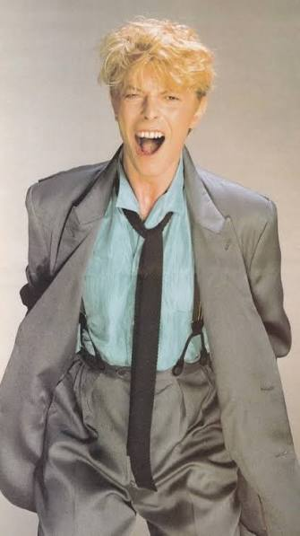
1983
Let's Dance
Con Let's Dance logra su mayor éxito comercial y sale de gira por el mundo con el Serious Moonlight Tour.
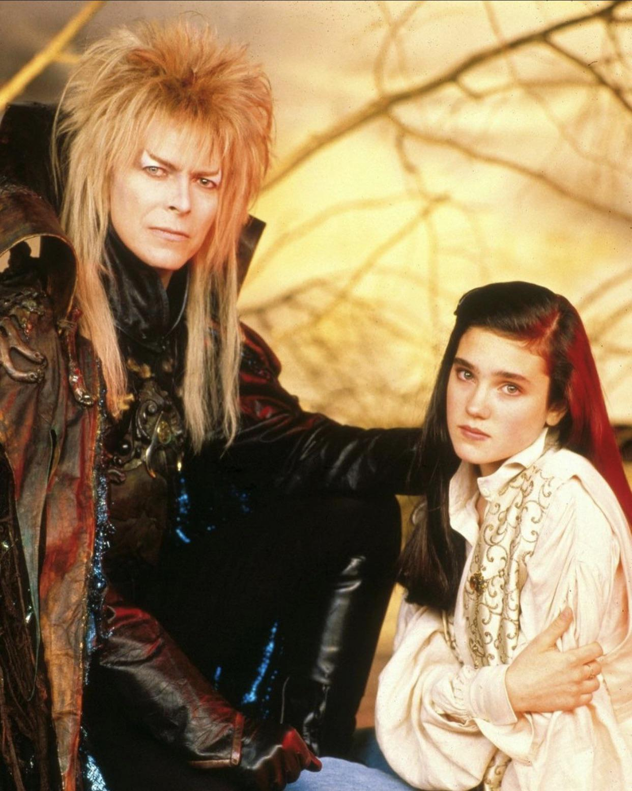
1986
Laberinto
Interpreta a Jareth, el Rey de los Goblins, en la película Laberinto, que se convierte en un clásico de culto.

1989
Tin Machine
Forma la banda de rock Tin Machine, donde decide ser un integrante más y no la estrella principal.

1992
Casamiento con Iman
Se casa con la modelo somalí Iman, su compañera hasta el final de su vida.

1996 – 1997
Salón de la Fama y Paseo de la Fama
En 1996 es incorporado al Rock and Roll Hall of Fame y en 1997 recibe su estrella en el Paseo de la Fama de Hollywood.
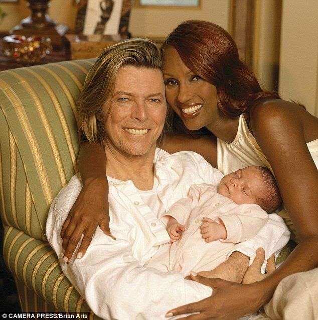
2000
Nace su hija
Nace Alexandria, su hija con Iman.

2003 – 2004
Reality Tour, su última gira
Publica Reality y sale de gira por el mundo. En 2004, durante un concierto en Alemania, sufre un problema cardíaco y debe cancelar la gira. Desde entonces se aleja de los escenarios.

2013
The Next Day
Tras diez años de silencio, sorprende a todos con The Next Day, anunciado el día de su cumpleaños 66. El museo V&A de Londres inaugura la muestra David Bowie Is.

2016
Blackstar y despedida
El 8 de enero, en su cumpleaños 69, publica Blackstar. Dos días después, el 10 de enero, muere en Nueva York a causa de un cáncer. El disco se convierte en su despedida.
Fuentes: investigación del grupo a partir del documental de YouTube y del sitio oficial davidbowie.com.
Fotos:
Bowie by Mick Rock: muestra dedicada a su histórico trabajo como fotógrafo oficial de David Bowie. Muestra 2018, La Rural.
La última sesión de fotos de David Bowie: fotógrafo personal, Jimmy King. Instagram de Iman Bowie.
Portada de Ziggy Stardust: fotografía de Brian Ward (1972).